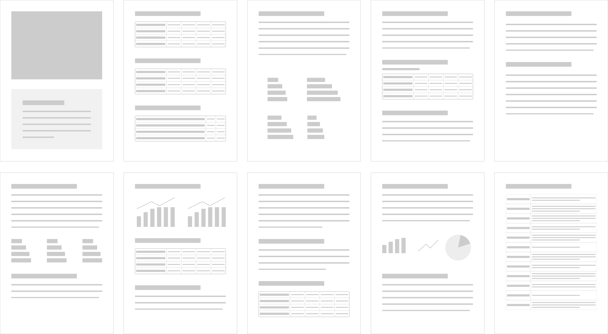
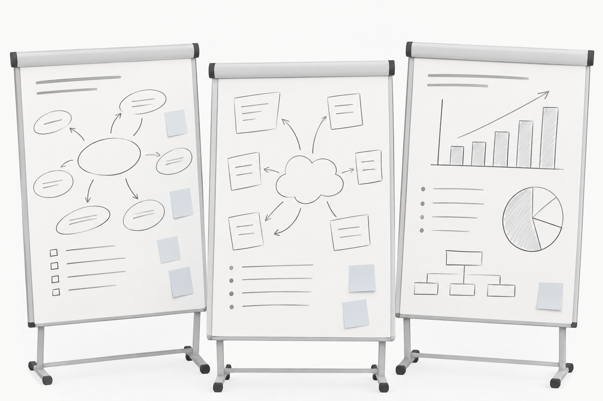
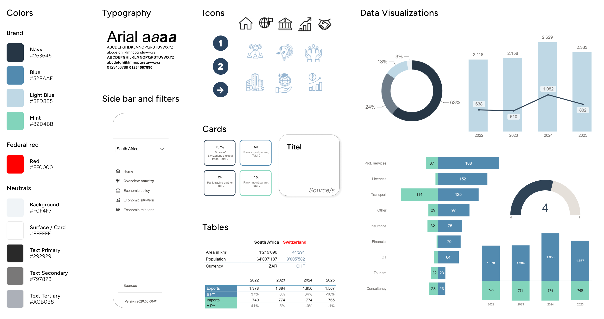
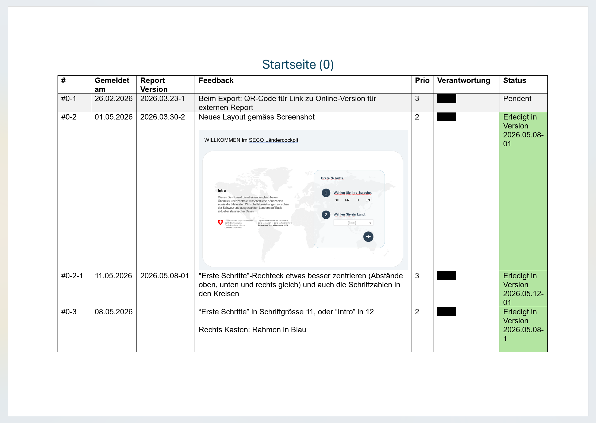

Case Study
Browsing the World's Economy
Transforming static country reports into an interactive public dashboard that makes economic information accessible, searchable and automatically updated.
View live product ↗
Overview
Replacing manual reporting with a living data experience.
The project replaced manually produced Word-based country reports with an interactive Power BI dashboard visualizing key economic indicators and country-specific information. Instead of browsing static documents, users can now search, compare and explore countries through a multilingual dashboard that updates automatically.
Product
A multilingual public Power BI dashboard exploring country-specific economic data.
Users
Businesses, policymakers, researchers, the general public and SECO collaborators.
Team
Cross-functional team of 1 UX Designer, 2 Developers and 3 Subject Matter Experts from SECO's Bilateral Economic Relations Division
Problem
Death by screenshot.
For each country, economic information had to be manually assembled into a Word document. Data was exported from Excel, charts were captured as screenshots and content was updated by hand. The process was repetitive, time-consuming and highly error-prone. The potential to replace this manual process with an interactive public dashboard was enormous.

Manual reports
Every country report had to be created and updated manually.
Outdated information
Screenshots and copied data increased the risk of outdated or inconsistent information.
Hard to explore
Users could not easily search, compare or interact with the data.
Role
I acted as the bridge between subject matter experts and technical implementation. As the project's sole UX and data visualization designer, I translated complex economic information into a clear, accessible and engaging dashboard experience.
Constraints
Limited budget, a fixed website go-live deadline, delayed access to data, no formal user research, four languages to support and initially unclear project ownership were constraints we needed to navigate.
01
Research
Missing the start of the party.
I joined the project six months after it had officially started. Despite this, very little progress had been made because access to the data was delayed. The consultants believed design work could only begin once the data became available. I saw it differently.
The time could have been used to better understand future users, explore initial concepts and validate key design decisions. Instead, early decisions were based almost entirely on internal expertise, even though one of the dashboard's main audiences would ultimately be the public.
Challenge
No formal user research had been conducted and the public, one of the key user groups, had not been involved.
Solution
Continuously question assumptions and advocate for user needs throughout the project, despite joining after many early decisions had already been made.
Pictures from the kick-off workshop

02
Design
Cutting word into pieces.
Together with one consultant, I revisited the report's structure from scratch. A first mockup already existed, but navigating it was difficult and the information architecture felt overwhelming.
We literally cut the Word document apart and explored how the information could be reorganized into a more intuitive dashboard experience. We also asked what deserved to become a visualization instead of remaining a table.
Challenge
The implemented product did not always match the prototypes. Colors differed, alignments shifted and implementation inconsistencies required continuous follow-up.
Solution
Continuously review the implementation, prioritize the design elements that had the greatest impact on usability, and come up with alternative solutions when technical limitations occurred.
Revisiting the information architecture and generating first data visualization ideas

Design decisions (hover to discover)

Color with purpose
The color palette builds on existing federal dashboards to create a familiar and trustworthy experience. Federal red is reserved exclusively for Switzerland, making comparisons immediate and intuitive. Only the country name is highlighted, while numerical values remain neutral to avoid unintended negative associations.
Designing within constraints
Typography followed the federal design guidelines, with Arial as the required typeface. Its familiarity and readability support efficient information scanning. Technical limitations prevented adjustments to letter and line spacing, requiring the design to work within a denser typographic layout.
Guiding the eye
Icons were used sparingly to improve orientation and scanability without competing with the data.
Stay oriented
A persistent sidebar provides clear orientation, while the country filter lets users seamlessly switch between country profiles from any page.
Choosing the right chart
Rather than relying on a single chart type, each visualization was selected for the data it communicates best. Consistent colors, with blue for exports and mint for imports, reinforce recognition across charts, while neutral tones prevent visual clutter.
Organizing complexity
A consistent card-based layout organizes both information and key indicators into clear, easy-to-scan sections. Key figures are immediately visible, while consistent color coding distinguishes export and import metrics. Displaying data sources directly on each card reinforces transparency and trust.
Exact figures, when needed
Tables complement the visualizations by providing precise values for users who need exact figures. They can also be exported to Excel, supporting further analysis and reporting.
03
Iterate
Good things come in threes.
The project evolved through three major phases: developing an MVP, refining it through multiple feedback and implementation rounds until the first internal version was ready, and a final round of refinements before the public release.
Challenge
Feedback was continuous but highly unstructured, while technical limitations frequently reshaped what was possible.
Solution
Deadlines were introduced in the feedback tracker, and regular exchange sessions with the developers helped improve alignment and keep the project moving forward.
Page example of feedback document

04
Launch
Going public.
The final version was released as a public Power BI dashboard and integrated into SECO's new website. Instead of manually assembled country reports, users with very different levels of expertise can now explore economic information through an automated, multilingual and interactive experience.
Challenge
The dashboard had to be ready for the website go-live while still meeting public-facing quality standards across four languages.
Solution
Maintain close collaboration with the developers by responding quickly, preparing implementation-ready documentation and resolving questions as they arose.
Country Cockpit on the public SECO Website
The Final Product
Browsing the World's Economy


Impact
From weeks of manual reporting to near real-time insights.
1 month
of manual work eliminated.
100 → 1
One dashboard replacing 100+ Word reports.
95%
of process automation.
Testimonial
"Anouk developed the visual concepts, data visualizations, and prototypes for our digital Country Cockpit. She transformed a rather dry subject into something that is both clear and visually engaging. We are very proud of the result!"
"Anouk [...] transformed a rather dry subject into a highly engaging experience. [...]"
The Afterlife
A public dashboard that can keep growing.
The dashboard is live and publicly accessible. SECO is planning to expand it with additional data, and other departments of the Swiss Confederation are expected to use it as inspiration for future public dashboards.